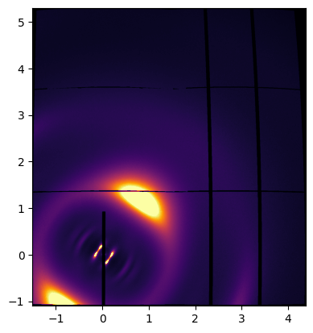
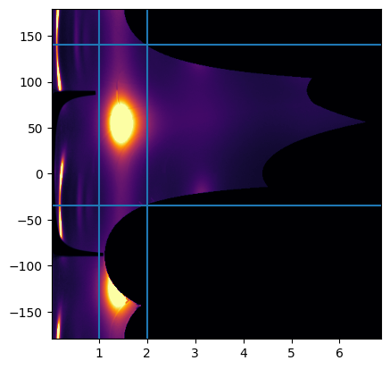
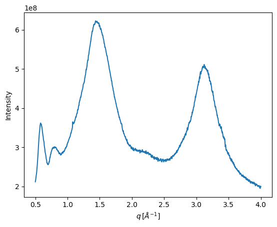
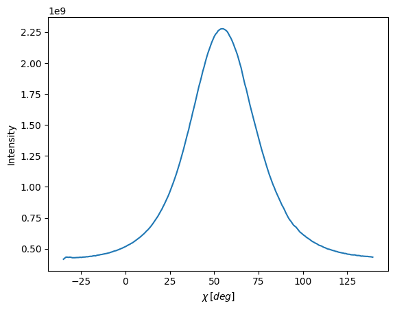

900KW WAXS Detector Workflow¶
[103]:
import os, glob, re
import numpy as np
import matplotlib.pyplot as plt
from smi_analysis import SMI_beamline
Helper Functions
[104]:
def plot_2d_image(data, ax, extent=None, aspect=None):
ax.imshow(data,
vmin=np.percentile(data,1),
vmax=np.percentile(data,99),
cmap='inferno',
extent=extent,
aspect=aspect,
origin='upper')
def get_wa(file_name):
match_obj = re.search(pattern='_wa(\d+.\d+)', string=file_name.split('/')[-1])
return float(match_obj.groups()[0])
Collect data file names into a list¶
[105]:
!ls -l
total 25320
-rw-r--r-- 1 wyssuser staff 868325 Sep 24 15:50 900kw_example copy.ipynb
-rw-r--r-- 1 wyssuser staff 1120726 Sep 24 17:05 900kw_example.ipynb
-rw-rw-r--@ 1 wyssuser staff 3656196 Sep 30 2021 900kw_wa0.0.tif
-rw-rw-r--@ 1 wyssuser staff 3656196 Sep 30 2021 900kw_wa2.0.tif
-rw-rw-r--@ 1 wyssuser staff 3656196 Sep 30 2021 900kw_wa20.0.tif
[106]:
# Path to directory where data files are stored
data_path = os.getcwd()
# get all files within `data_path`
data_files = glob.glob(data_path + '/*')
# keep only file names
data_files = [f.split('/')[-1] for f in data_files]
# keep only .tif files
data_files = [f for f in data_files if f.endswith('.tif')]
# sort files by waxs detector rotation angle
data_files.sort(key=get_wa)
# make a list of all detector rotation angles
wa_list = [get_wa(f) for f in data_files]
print('Files Found: ', data_files)
print('WAXS Detector Angles: ', wa_list)
Files Found: ['900kw_wa0.0.tif', '900kw_wa2.0.tif', '900kw_wa20.0.tif']
WAXS Detector Angles: [0.0, 2.0, 20.0]
Define SMI Geometry¶
Refer to the calibration tutorial to find sdd and poni1 and poni2
[107]:
sdd = 277 # mm
poni1 = 0.21603200 # m
poni2 = 0.0518690 # m
[108]:
energy = 16.1 # keV
beam_center = [poni2/(172e-6), poni1/(172e-6)] # pixels - 900kw pixel size = 172 um/px (see calibration tutorial)
smi = SMI_beamline.SMI_geometry(
geometry='Transmission', # Transmission or Reflection
sdd=sdd, # mm
wav=1E-10 * (12.39842/energy), # m
center=beam_center, # pixels
bs_pos=[[307, 1070]], # pixels - must be a list of a list and must be integer values
detector='Pilatus900kw',
det_angles=[np.deg2rad(v) for v in wa_list], # radians
alphai=np.deg2rad(0) # radians
)
# add data files to smi geometry
smi.open_data(data_path, data_files)
Stitch Images Together¶
[109]:
smi.stitching_data(interp_factor=1)
fig, ax = plt.subplots()
plot_2d_image(smi.img_st, ax, extent=[*smi.qp, *smi.qz])
plt.show()

Caking Procedure¶
[110]:
smi.caking()
fig, ax = plt.subplots()
aspect = abs(smi.q_cake[0]-smi.q_cake[-1]) / abs(smi.chi_cake[0] - smi.chi_cake[-1])
extent = [smi.q_cake[0], smi.q_cake[-1], smi.chi_cake[-1], smi.chi_cake[0]]
plot_2d_image(smi.cake, ax=ax, extent=extent, aspect=aspect)
ax.axvline(1)
ax.axvline(2)
ax.axhline(140)
ax.axhline(-35)
plt.show()

Radial Integration¶
[111]:
smi.radial_averaging(radial_range=(0.5,4))
plt.plot(smi.q_rad, smi.I_rad)
plt.xlabel('$q \, [\AA^{-1}]$')
plt.ylabel('Intensity')
plt.show()

Azimuthal Integration¶
[112]:
smi.azimuthal_averaging(radial_range=(1.0, 2.0), azimuth_range=(-35, 140))
plt.plot(smi.chi_azi, smi.I_azi)
plt.xlabel('$\chi \, [deg]$')
plt.ylabel('Intensity')
plt.show()
